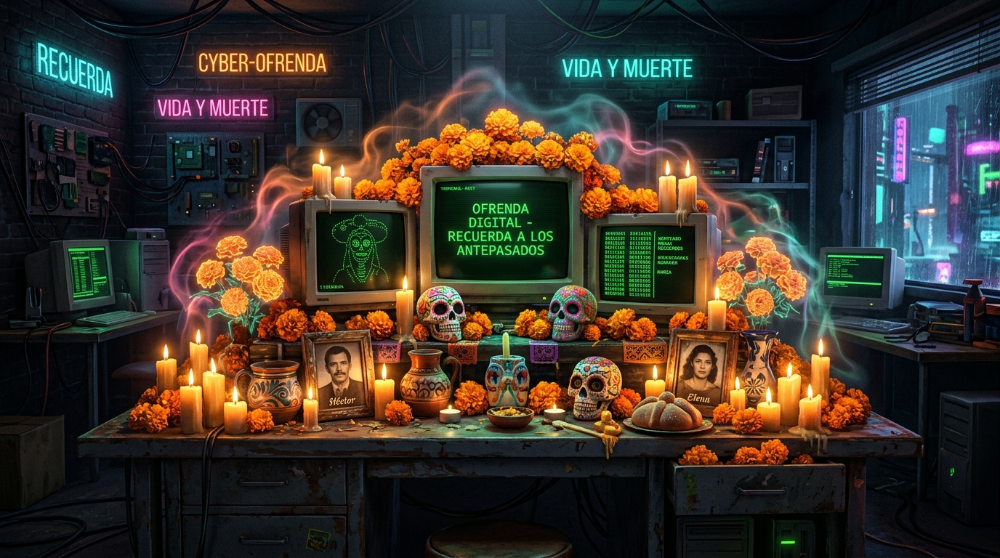

🕯️ Sacred Cyber-Candles (Click to Light or Whisper)
🌼 Traditional & Digital Offerings
✨ Generate an Altar Remembrance with Gemma 3
Dedicate an ofrenda blessing to a departed pioneer (Ada Lovelace, Alan Turing, Dennis Ritchie), a retired system (Flash Player, GeoCities, iPod), or someone you hold dear.
⚡ Powered by Gemma 3 & Ollama
This project runs 100% locally on your machine using Google's open-weight Gemma 3:4B model via Ollama. No remote API keys, no subscription tiers, and no cloud dependencies.
🔒 Why Open Innovation Matters
Privacy & Intimacy: Memories, family names, and sacred ofrenda remembrances never leave your personal computer.
Resiliency: The system works offline in the dark with the internet disconnected, true to the Halloween ethos of the ghost in the machine.
🏆 DEV Challenge Hub Ready
Created for Hacktoberfest Open-Source AI Challenge: Week 4 ("Ghost in the Machine"). Eligible for Overall Prize and the Best Use of Gemma featured category ($200).
📝 Pre-Formatted Submission Draft (#hf26challenge)
Ready to publish on DEV to enter the challenge: